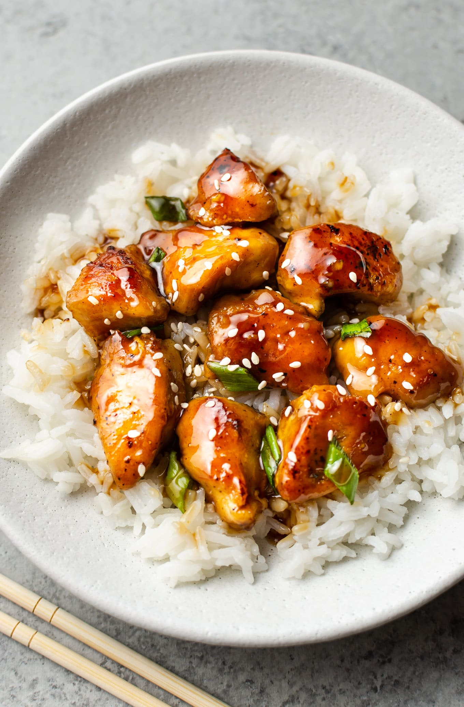

Go back
POLLO TERIYAKI

Description:
Crispy skinless chicken thighs stir-fried and swimming in a beautiful
flavoured homemade teriyaki sauce. A hint of garlic adds a twist on
a traditional Japanese Teriyaki Chicken recipe and makes it absolutely
addictive! This is better than ANY store-bought teriyaki sauce, guaranteed.
Ingredients:
- 1.3 pounds (600 grams) skinless boneless chicken thighs, cut into 1 1/2-inch pieces
- 1 tablespoon cooking oil
- 1/4 cup low-sodium soy sauce
- 3 tablespoons light brown sugar (or white granulated sugar)
- 3 tablespoons cooking Sake ((rice wine vinegar or apple cider vinegar)
- 2 tablespoons Mirin (optional -- white wine or dry sherry can be substituted)
- 1 tablespoon sesame oil, optional (adds a wonderful flavour)
- 2 teaspoons minced garlic (2 cloves garlic)*
- 1 shallot/green onion stem, sliced to garnish
- 4 cups broccoli florets, lightly steamed
- 1 teaspoon cornstarch (or corn flour) mixed with 2 teaspoons water (ONLY IF NEEDED)
Steps:
- Heat cooking oil in a large pan over medium heat. Stir fry chicken, stirring occasionally until lightly browned and crisp.
- In a small jug or bowl whisk together the soy sauce, sugar, Sake/vinegar, Mirin and sesame oil to combine. Set aside.
- Add the garlic to the centre of the pan and saute until lightly fragrant (about 30 seconds). Pour in the sauce and allow to cook, while stirring, until the sauce thickens into a beautiful shiny glaze (about 2-3 minutes).*
- Add in the steamed broccoli. Garnish with green onion (or shallot) slices and serve over steamed rice.